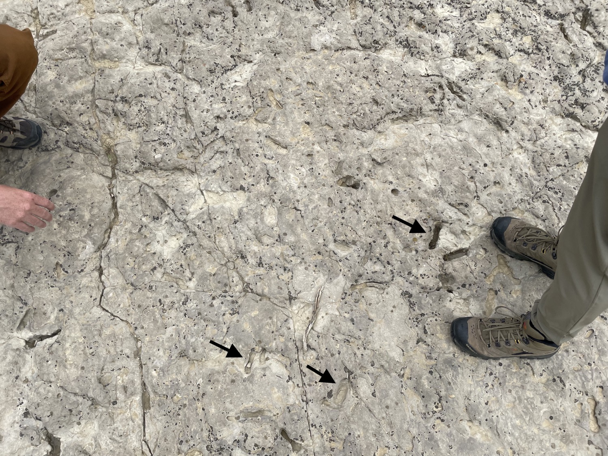
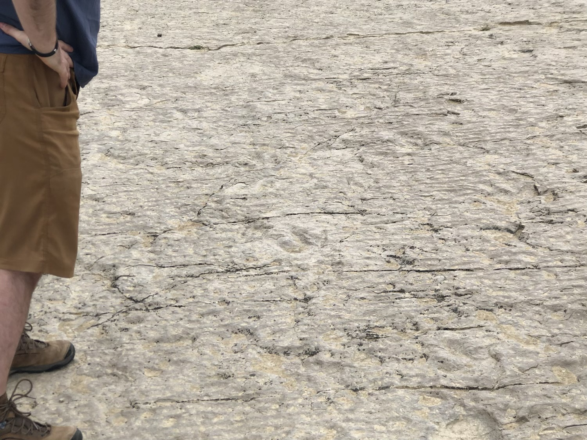
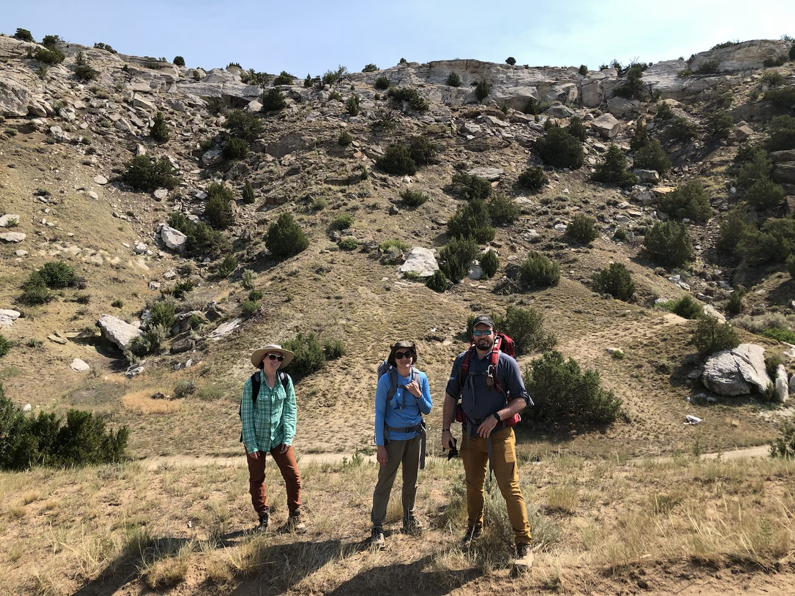
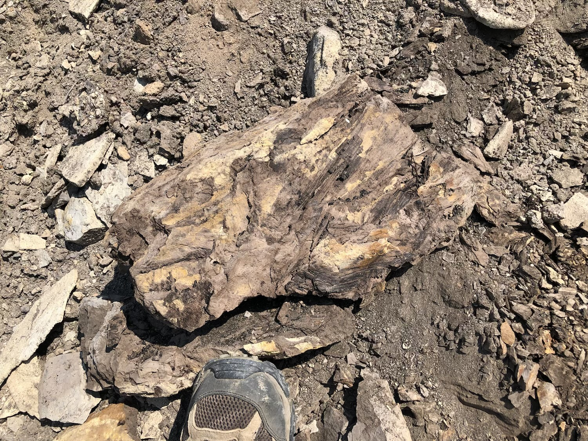
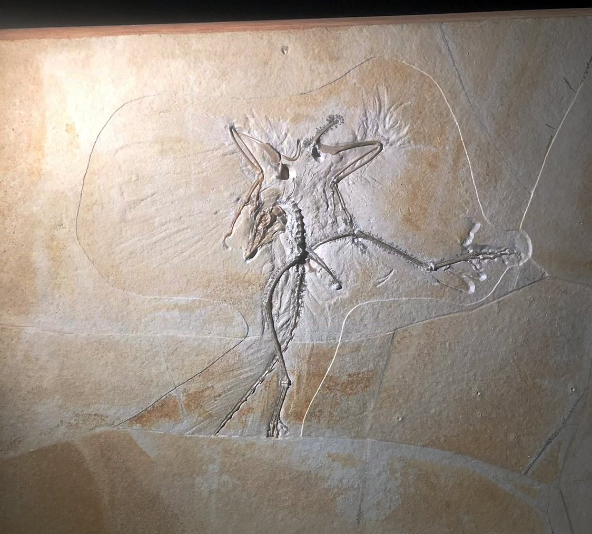

2021 Dispatch from the field #4
After July 4th our team grew a bit. Eric Gorscak and Sasha Prokuda arrived in time for a Fourth of July picnic in Powell, WY, and then on Monday the 5th we met up with geologist Erik Kvale to scout some potential new sites for future collections. We began in the Sundance Formation with a visit to the Red Gulch Road dinosaur track site, where we learned to spot the dinosaur tracks among the preserved tidal ripples and to distinguish them from Diplocraterion trace fossils (ancient burrows left by worm-like animals). The "diplo" traces can occasionally occur in groups of three and fool the casual observer into believing they are seeing a dinosaur footprint (at arrows in the photos below, left). In fact, the diplo tracemakers lived after the dinosaurs walked this surface. As they burrowed into soft sediments that buried the footprint horizon, the bases of their U-shaped burrows reached down to the track surface.


After exploring the track site we moved on to prospect in the upper Morrison Formation and lower Cloverly Formation. Although our initial explorations were promising, we were soon forced out by another surprise rainstorm that would have made the roads undrivable. So, we returned to Greybull to help Erik with identifying some plant fossils at the Greybull Geoscience Center. This led to several hours of excitement when I noticed some enticing angiosperm-like fragments on a rock stored with several other specimens from a Morrison (Jurassic) site. We immediately set to work tracking down the exact source of this block and investigating alternative explanations. Eventually, we split the block to check for more specimens, and by the time the afternoon was over, we were all confident that the block had been misplaced at some point and it was in fact from the Paleocene Fort Union Formation. While we did not find a Jurassic angiosperm, it beat being stuck in the mud on the outcrop all afternoon, and my crew got to learn about identifying angiosperms and meet some interesting people along the way.
The next day we returned to the lake site to collect more plant fossils with the help of Dr. Steve Manchester and his graduate students from the University of Florida. Erik joined us once again and was accompanied by his aunt Rowe. In addition to the usual suspects from previous collections, we also found several well-preserved caddisfly cases, some winged seeds, and additional fern pinnules.
Steve's group left us after lunch, and in the afternoon the rest of us walked out much of the outcrop, tracing beds and contrasting them with those that crop out in more northern exposures of the Cloverly Formation. The dramatic white cliffs in the photo below are made of sandstone deposited by braided rivers during Aptian or early Albian time (about 115 million years ago). Late in the afternoon we returned to camp for dinner with our vertebrate paleo colleagues.

In his 1970 publication on the paleontology of the Cloverly Formation, John Ostrom of Yale University mentioned a lignitic, carbonaceous shale in the lower part of the formation in the southern Bighorn Basin. This is a promising description for a paleobotanist. I had not visited that site before, and I wanted Ben, Eric, and Sasha to see the Wyoming Dinosaur Center in Thermopolis. So, on Wednesday we headed south for the day. Initially, I was excited to see a carbonaceous shale in the Cloverly so obvious on the hillside as we approached the outcrop. However, once we got up to it, it was clear that we were looking at a high-energy deposit dominated by rather large (5–20+ cm diameter), compressed, carbonized logs with rounded pebbles mixed in. I collected samples for pollen analysis and some large blocks to explore back at the lab, but there were no obvious leaves. My optimism returned, however, as I examined the blocks carefully with a hand lens as we wrapped them for transport. We had, in fact, collected some dark fern foliage on dark rock! We won't know for sure if the flora is similar to that of our lake until we can examine the fossils carefully back in the lab.

We finished our day with a visit to the hot springs and the air-conditioned cool of the Wyoming Dinosaur Center. Sure, North America's only Archaeopteryx is cool, but they need a bit more paleobotany there.
